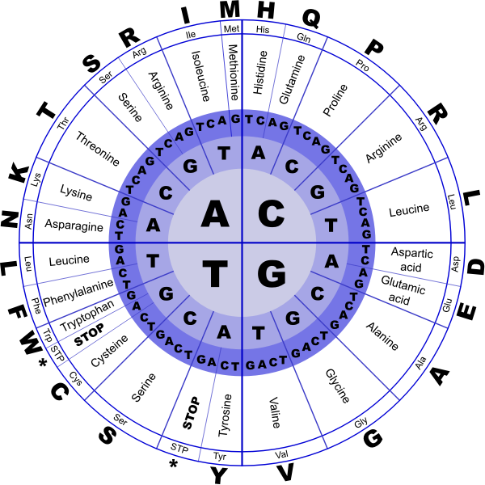
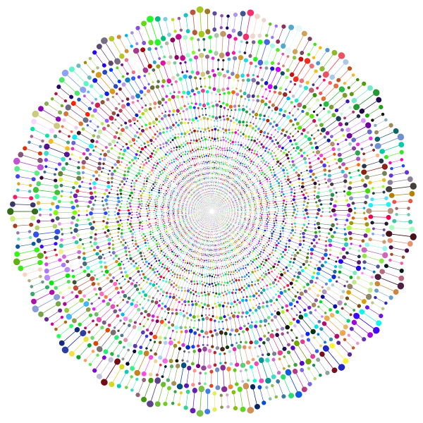
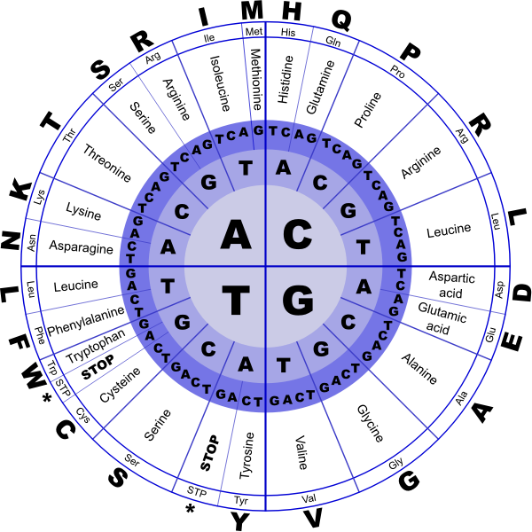
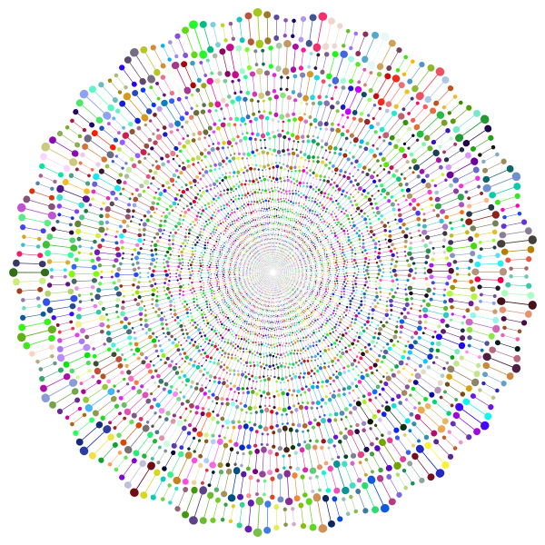

Búsqueda de Tesistas/Becarios de Posgrado
 



Estamos en la búsqueda de candidatos que estén interesados en realizar un Doctorado en temas asociados a Bioinformática.
- Temas: Feature Selection, Prognosis, Multiple Aligment Sequence, etc.
- Perfil: Licenciados en Ciencias de la Computación, Ingenieros en Sistemas y afines.
- Requisitos: Dominio del idioma inglés, manejo de R, Python con conocimiento en inteligencia artificial
Te invitamos a que nos envíes un correo electrónico con título: [Apellido] Postulante, en el que nos adjuntes un CV con detalle completo de materias cursadas, calificaciones incluyendo aplazos, experiencia en investigación, asistencia a congresos y publicaciones. acolivera@conicet.gov.ar o pjvidal@conicet.gov.ar.
Búsqueda de Tesistas/Becarios de Grado
Estamos en la búsqueda de candidatos que estén interesados en realizar su trabajo final de carrera temas asociados a Bioinformática.
- Temas: Feature Selection, Prognosis, Multiple Aligment Sequence, etc.
- Perfil: Estudiantes de Licenciatura en Ciencias de la Computación, Ingeniería en Sistemas y afines.
- Requisitos: Dominio del idioma inglés, manejo de R, Python con conocimiento en inteligencia artificial. Actitud proactiva para trabajar a distancia.
Te invitamos a que nos envíes un correo electrónico con título: [Apellido] Postulante, en el que nos adjuntes un CV con detalle completo de materias cursadas, calificaciones incluyendo aplazos, experiencia en investigación, asistencia a congresos y publicaciones. acolivera@conicet.gov.ar o pjvidal@conicet.gov.ar.